Part A / 1
A.1 Taking the pictures
I took the photos in my neighborhood and in the bottom floor of MLK and used an Iphone 18 to take all my photos. I held my phone and then slightly rotated it to the right by approx. 20 degrees. I fixed my hand position and only rotated my hand. Most of the images overlap by at least 40% and there aren’t many changes in lighting and reflections, since I took the photos in really fast timestamps, around a second between them. Here are the three image sets below.
The same point number marks a matching feature. Gold L points are for the left overlap and blue R points are for the right overlap. Turn the points off to see the originals, or click a photo to enlarge it.
01 / Benches and bank entrance

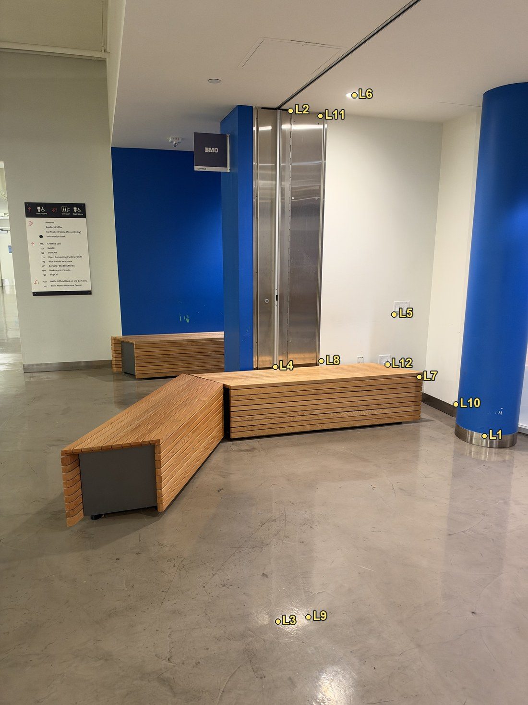
Left view / L1 to 12

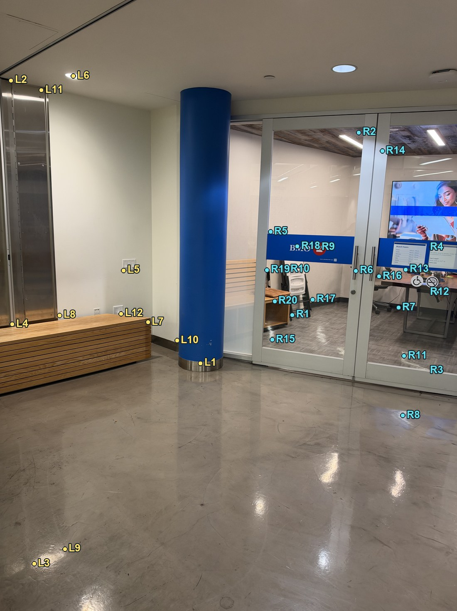
Reference / L1 to 12, R1 to 20

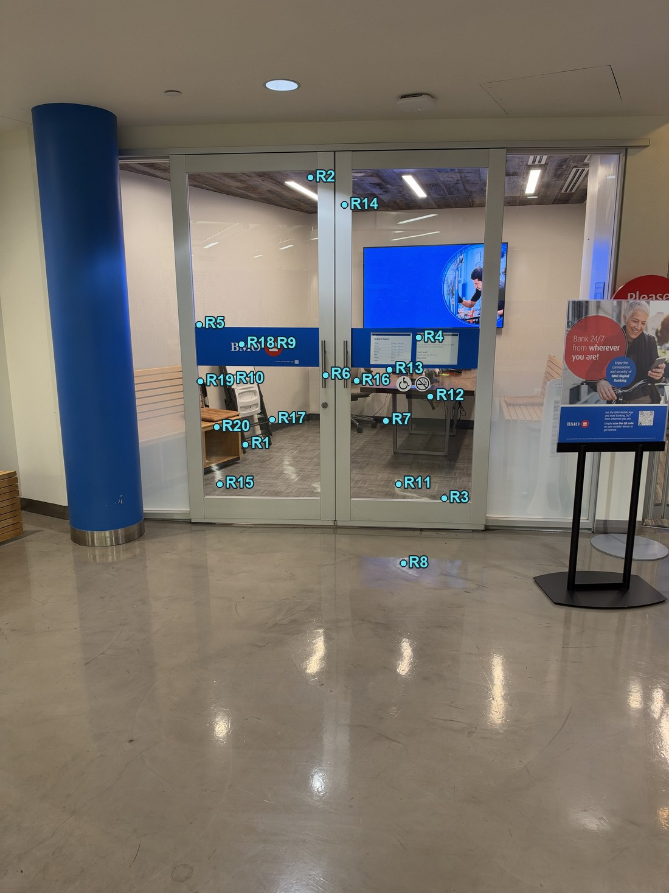
Right view / R1 to 20
02 / Lockers and vending machines

Left view / L1 to 20

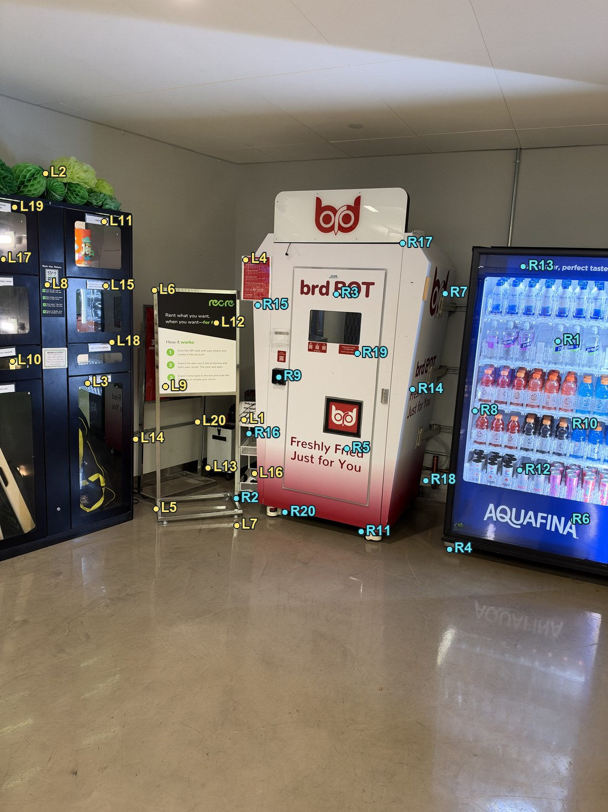
Reference / L1 to 20, R1 to 20

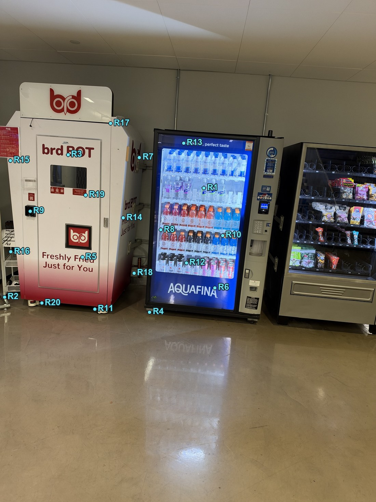
Right view / R1 to 20
03 / Doors and microwaves

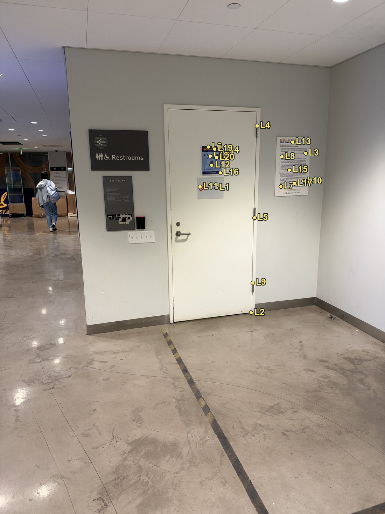
Left view / L1 to 20

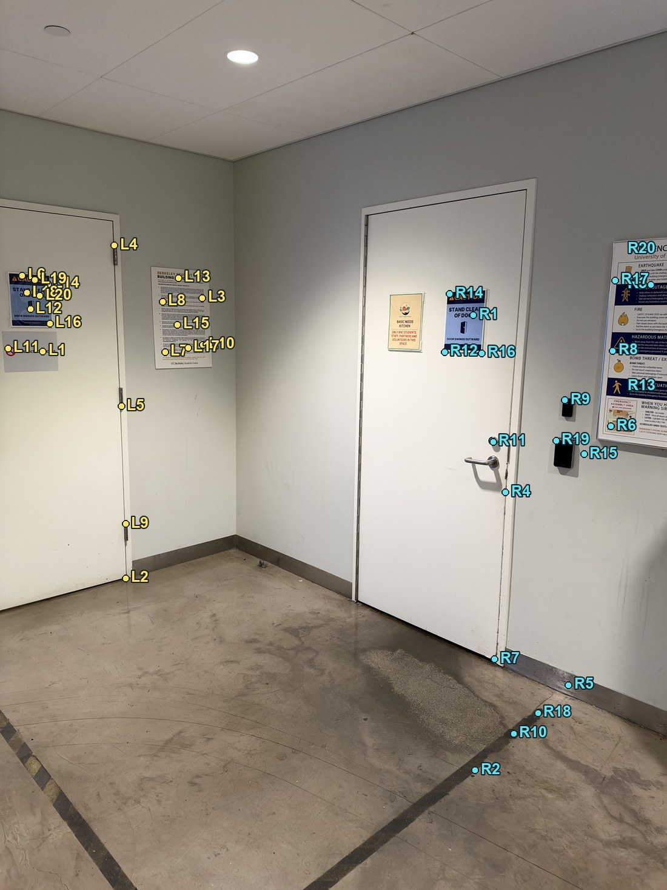
Reference / L1 to 20, R1 to 20

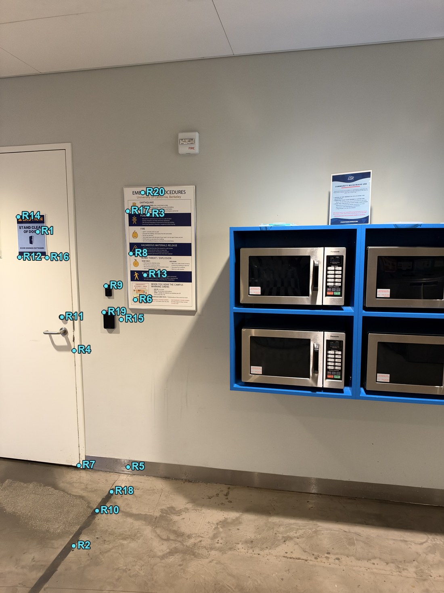
Right view / R1 to 20
Part A / 2
A.2 Recovering homographies
A homography H maps a point (x, y) in one image to (x′, y′) in another. The result is scaled by w′, so we divide by that to get the final coordinates. It has nine entries but only eight degrees of freedom, so we fix the bottom right one to 1. We can reconstruct the problem of finding the coefficients in the matrix into a least squares equation, as shown below.
Here, h holds the eight unknown entries of H. Each pair of points gives us two equations. I combined these equations for all the points and used np.linalg.lstsq to solve them. I used more than 4 matches to reduce the effect of small errors in the point coordinates.
I identified the initial points of correspondence using the provided 180 website. For the final mosaics, the points were found using SIFT and filtered with a custom RANSAC loop using computeH. I then saved these points in main.py.
Here are the recovered homographies for each mosaic. Each matrix maps an outer image into the middle image, before the canvas translation. These use images at 1/4 of the original width and height. The numbered correspondence points are shown on the photos in A.1.
Benches and bank entrance
IMG_0033 → IMG_0034
12 point correspondences / quarter resolution
IMG_0035 → IMG_0034
20 point correspondences / quarter resolution
Lockers and vending machines
IMG_0036 → IMG_0037
20 point correspondences / quarter resolution
IMG_0038 → IMG_0037
20 point correspondences / quarter resolution
Doors and microwaves
IMG_0039 → IMG_0040
20 point correspondences / quarter resolution
IMG_0041 → IMG_0040
20 point correspondences / quarter resolution
Part A / 3
A.3 Warping and rectification
I used inverse warping because I wanted to avoid holes in the output image. I went through the output pixels and used H−1 to find where each pixel came from in the original image. I then divided by the third coordinate to get the source coordinates.
For nearest neighbor, I rounded these coordinates and used the closest pixel. For bilinear interpolation, I took the four surrounding pixels and calculated their weights based on how close they were to the source coordinate. I used these weights to calculate the final pixel value.
x₀ = floor(x), x₁ = x₀ + 1, y₀ = floor(y), y₁ = y₀ + 1. The fractions tₓ = x − x₀ and tᵧ = y − y₀ determine the four weights. Neighbor indices are clamped at the image edge.
I found the bounds for general warps by transforming the image corners. For rectification, I set the output rectangle directly. Any pixels that mapped outside the original image were left black.
I used the door and the menu for rectification. I mapped the four door corners to a rectangle that was 600 pixels wide and 1600 pixels tall. For the menu, I used a rectangle that was 850 pixels wide and 1100 pixels tall. This straightened both objects so they looked like they were being viewed from the front. I also rotated the menu so the text was upright. Here are the original images and both interpolation results below.
Door rectification

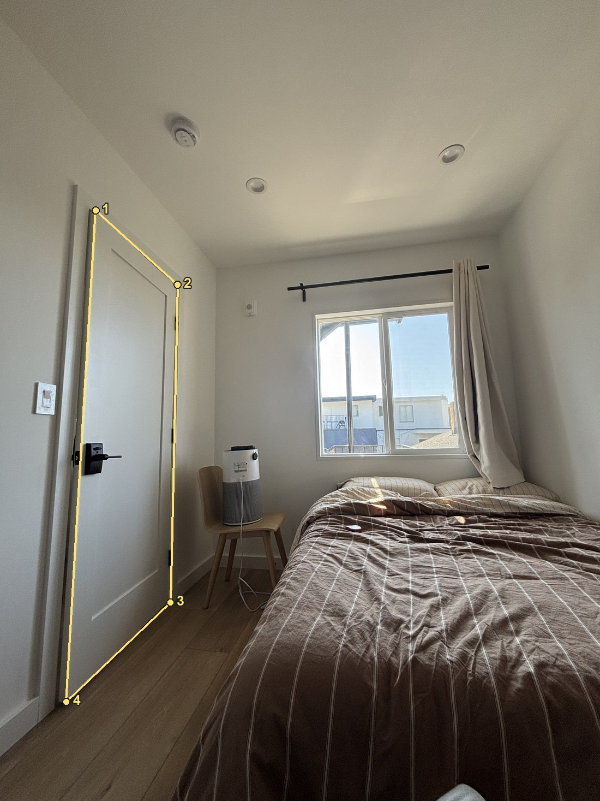


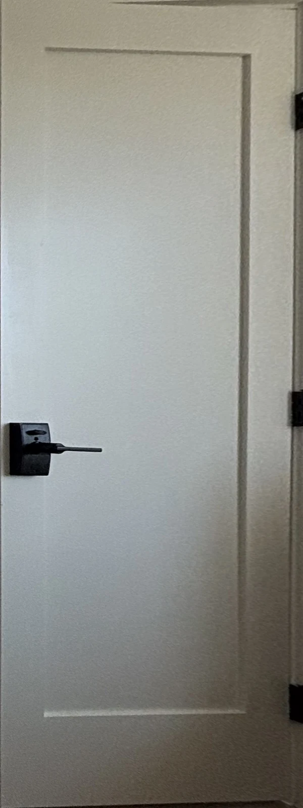
Show the corner correspondences
| Corner | Source (x, y) | Destination (x′, y′) |
|---|---|---|
| 1 | (482, 1060) | (0, 0) |
| 2 | (894, 1434) | (599, 0) |
| 3 | (858, 3034) | (599, 1599) |
| 4 | (334, 3534) | (0, 1599) |

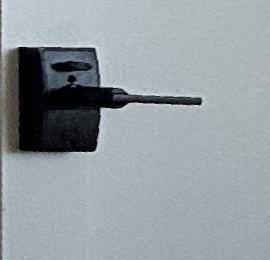

Menu rectification

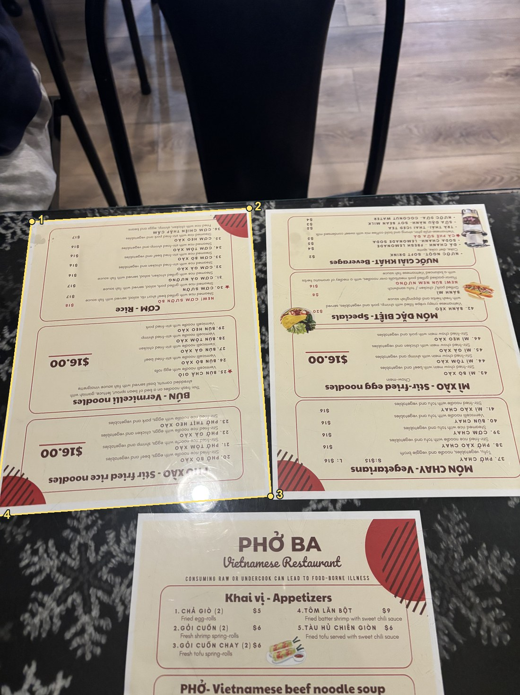


Show the corner correspondences
| Corner | Source (x, y) | Destination (x′, y′) |
|---|---|---|
| 1 | (263, 1819) | (0, 0) |
| 2 | (2054, 1710) | (849, 0) |
| 3 | (2230, 4077) | (849, 1099) |
| 4 | (-44, 4243) | (0, 1099) |


Bilinear interpolation looked smoother around the door edges and the menu text. Nearest neighbor looked more jagged when I zoomed in, but it was much faster. Nearest neighbor took around 0.06 seconds and bilinear took around 2.4 seconds per rectification. My bilinear code took longer because it calculated the four neighboring pixel weights inside a Python loop.
| Rectification | Nearest neighbor | Bilinear |
|---|---|---|
| Door / 600 × 1600 | 0.060 s | 2.386 s |
| Menu / 850 × 1100 | 0.059 s | 2.435 s |
Part A / 4
A.4 Building and blending mosaics
I used three images for each mosaic and chose the middle image as the reference. I computed one H to map the left image into the middle image and another H to map the right image into the middle image. I used different correspondence points for the left and right overlaps because they showed different parts of the scene.
I transformed the corners of all three images to find the minimum and maximum x and y coordinates for the canvas. Some of these coordinates were negative, so I added a translation to shift everything into the output image. I then warped the images onto this canvas using bilinear interpolation. I used images at 1/4 of the original width and height and divided the correspondence coordinates by 4 to match.
For feathering, I made alpha equal to 1 near the center of each image and made it decrease linearly as it got closer to the edges. I multiplied each image by its alpha and added the results together. I then divided by the sum of the alphas so the overlap would blend without getting darker.
Regular feathering still had some ghosting, especially on the TV because its content changed between photos. I used two band blending to reduce this. I blurred each image to get its low frequencies and subtracted the blurred image from the original to get its high frequencies. I used the feathered average for the low frequencies. For the high frequencies, I took the detail from whichever image had the largest alpha at that pixel.
I used σ = 10 pixels at the working resolution. The blur is normalized by the valid image area so the black canvas does not darken the image boundaries.
01 / Benches and bank entrance


02 / Lockers and vending machines


Compare feathering and two band blending

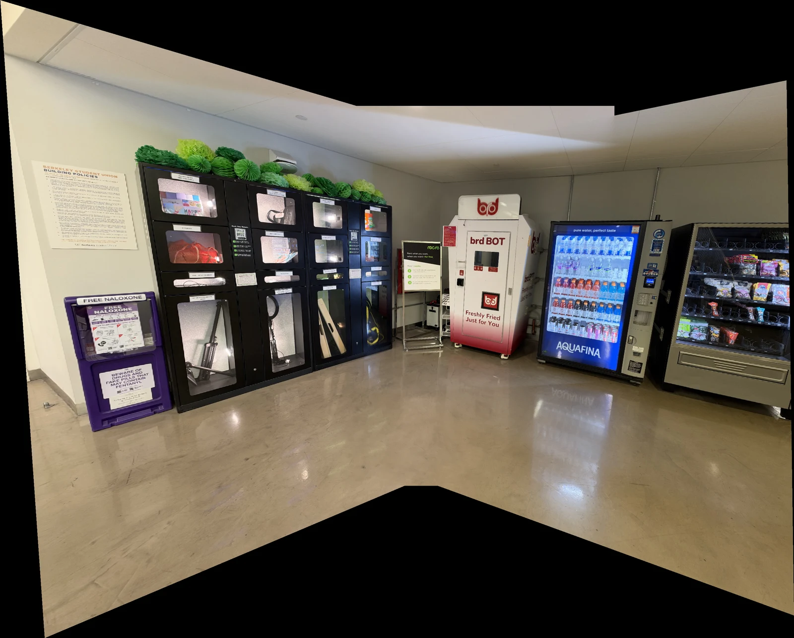
03 / Doors and microwaves


Compare feathering and two band blending

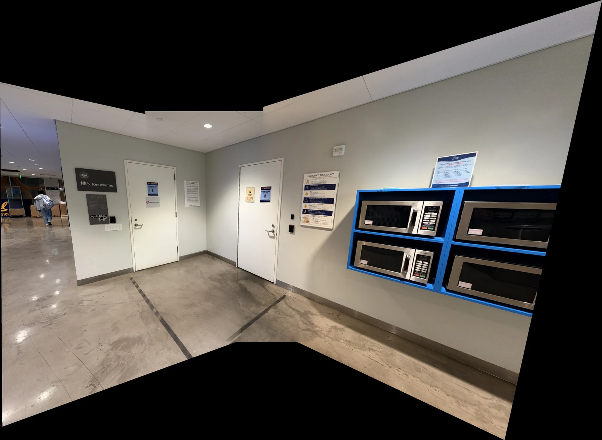
Comparing the TV detail

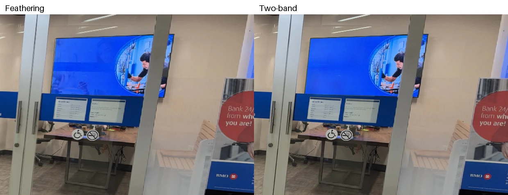
This reduced the TV ghosting and made the text and door frames sharper. There are still some brightness differences and stretching near the outer edges. The black areas around the mosaics are parts of the canvas that none of the images cover.
| Mosaic | Check matches | RMS error |
|---|---|---|
| Benches and bank entrance | 145 | 1.20 px |
| Lockers and vending machines | 693 | 1.06 px |
| Doors and microwaves | 124 | 1.04 px |
Errors are measured at the quarter-resolution working scale. This checks point alignment, rather than every image pixel.